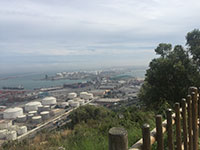
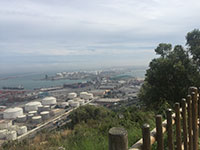
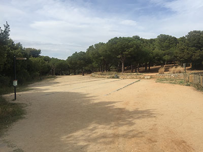
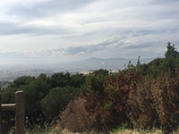

Aire Pur
Mirador del Migdia
 
Disposa de múltiples balcons miradors que permeten gaudir una magnífica vista panoràmica de Barcelona il·luminats per la llum intensa del sol ple i units per camins serpentejants ascendents i descendents pels pendents del terreny. Aquest parc és un bon lloc per passejar o per passar un dia de descans, ja que disposa d'espai de pícnic sota l'ombra dels pins i un bar des d'on es poden contemplar unes excepcionals postes de sol. Està ubicat en el sur de la muntanya de Montjuïc. Va ser planificada al mateix temps que es va projectar l'Anella Olímpica dels Jocs de 1992, situada en la mateixa muntanya.